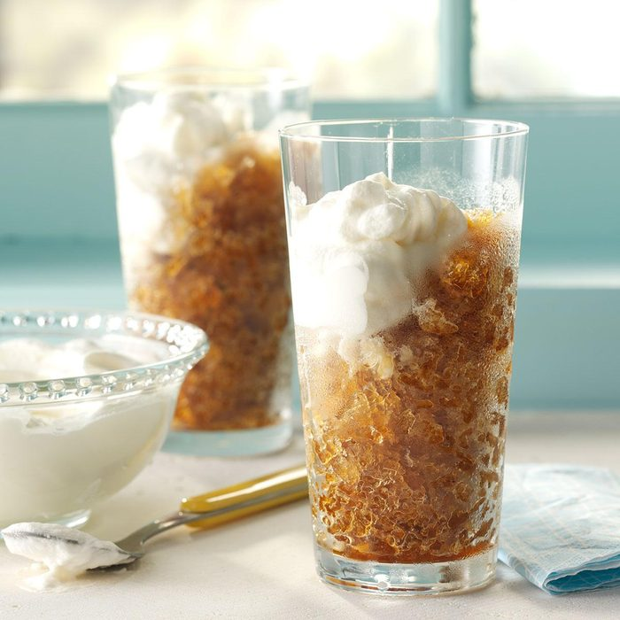

Tipsy Iced Coffee

An adult coffee with only four ingredients!
This drink makes for a nice dessert. You can also use any of your favorite coffee,
but it's recommended that you use something strong. Feel free to add or use less
cream and sugar than recommended!
- 4 cups strong brewed coffee
- 1/2 cup amaretto
- 1/4 cup sugar
- 2/3 cup heavy whipping cream
- Whisk coffee, amaretto, and 1/4 cup sugar in bowl. Let cool.
- Transfer to square dish. Freeze 1 hour. Stir with fork.
- Freeze 2 - 3 hours longer or until frozen.
- Beat cream in bowl until it begins to thicken. Add remaining sugar.
- Beat until still peaks form. Cover and refrigerate until serving.
- Stir mixture with fork, top with whipped cream. Serve immediately.